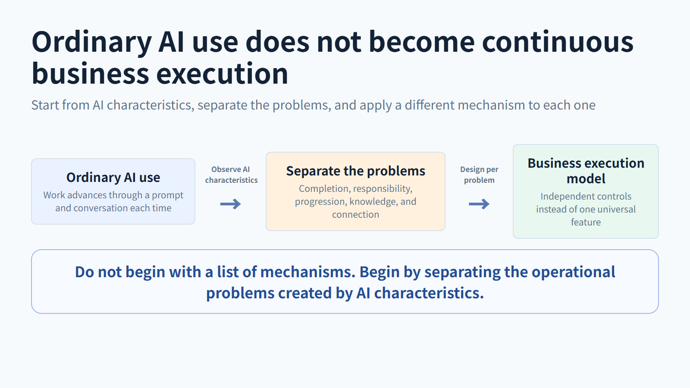

Turning AI Use into Continuous Business Execution
Why ordinary AI use does not become continuous business execution, and which mechanism addresses each AI characteristic.
Why ordinary AI use does not become continuous business execution, and which mechanism addresses each AI characteristic.